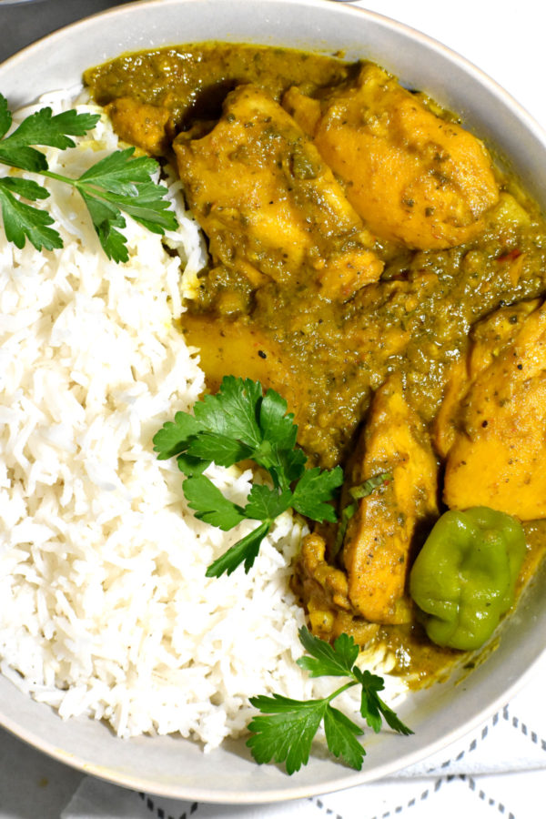

Trinidadian Curry Chicken

Description
A great West Indian curry chicken recipe. Chicken
with curry paste made from onions, garlic, ginger,
cilantro scotch bonnet and curry powder.
Ingredients
- 12 chicken drumsticks
- 1 onion
- 1 inch ginger peeled
- 4 garlic cloves
- 1/2 cup fresh cilantro
- 2 tbsp curry powder
- 1 tsp salt
- 1 hot pepper (scotch bonnet or habanero)
- 4 tbsp oil
- 4 bay leaves
- 1/2 cup (120ml) water
- 1/2 cup chopped cilantro
Steps
- Wash the chicken drumsticks and peel the skin up to the knob.
- Using a cleaver, or any good solid knife, chop the top part off the
drumstick. Check to see if there are any little chipped pieces of bone
hanging around. Remove them, if there are, and wash them one more time.
- Pulse the onion, garlic, ginger, 1/2 cup cilantro and hot pepper in the
food processor until finely chopped. Remove the seeds of the pepper if
you do not like it really hot.
- Add the curry powder and pulse it again until a curry paste is formed.
- Rub the curry paste all over the chicken drumsticks and place in the fridge
for at least an hour to marinate. Heat the oil in a skillet and add the marinated
chicken. Brown on all sides and then add the water to create a sauce. Let the
chicken simmer about 45 minutes longer. Add a little more water if the sauce
gets too dry.
- Remove from the heat and stir in the chopped cilantro. Serve with rice or
roti (if you can get them).